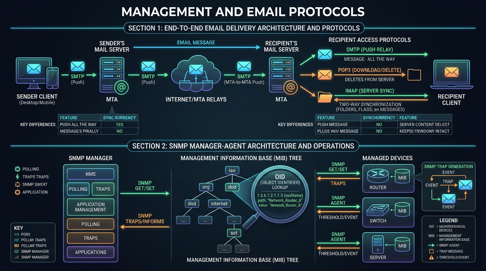

Master SNMP network monitoring (MIB, OID, Traps, Manager-Agent architecture) and explore the complete Application Layer protocols master table.
SNMP (Simple Network Management Protocol) is an application-layer protocol used to monitor, configure, and manage network devices (routers, switches, firewalls, servers).
MIB data variables are organized in a **hierarchical tree structure**. Every variable is uniquely identified by an **OID (Object Identifier)** string of numbers separated by dots.
This specific OID retrieves the hostname (sysName) of the managed router/switch.
SNMP operates over **UDP Ports 161 (Manager-to-Agent requests)** and **UDP Port 162 (Unsolicited Agent Traps)**:
| SNMP Operation | Initiator | UDP Port | Description |
|---|---|---|---|
| GetRequest | Manager → Agent | 161 | Retrieves the value of a specific MIB OID variable. |
| GetNextRequest | Manager → Agent | 161 | Retrieves the next sequential OID variable in the MIB tree. |
| SetRequest | Manager → Agent | 161 | Modifies/configures a MIB variable on the managed device. |
| GetResponse | Agent → Manager | 161 | Returns requested values or status results to the Manager. |
| Trap | Agent → Manager | 162 | Unsolicited alert sent immediately by Agent upon critical event (e.g., Interface Down, Power Supply Failure). |
| InformRequest | Manager → Manager | 162 | Acknowledged alert message sent between managers. |
| Version | Authentication | Encryption | Key Features |
|---|---|---|---|
| SNMPv1 | Community String (Plaintext password) | None (Unencrypted) | Original version; weak security. |
| SNMPv2c | Community String (Plaintext password) | None (Unencrypted) | Added GetBulkRequest for fast table retrieval. |
| SNMPv3 | User-based Security Model (USM) | AES / DES Payload Encryption | Secure modern standard with full authentication & encryption. |

| Protocol | Transport | Default Port(s) | Primary Function / Purpose |
|---|---|---|---|
| HTTP | TCP | 80 | Unencrypted web page transfer. |
| HTTPS | TCP | 443 | TLS-encrypted secure web page transfer. |
| FTP | TCP | 20 (Data), 21 (Control) | Reliable bulk file transfer. |
| TFTP | UDP | 69 | Lightweight file transfer without authentication. |
| DNS | UDP / TCP | 53 | Domain Name to IP Address resolution. |
| DHCP | UDP | 67 (Server), 68 (Client) | Automated dynamic IP address configuration. |
| SMTP | TCP | 25, 587 | Email submission and server-to-server relay. |
| POP3 | TCP | 110 (Plain), 995 (SSL) | Email retrieval (download & delete). |
| IMAP | TCP | 143 (Plain), 993 (SSL) | Email synchronization across multiple devices. |
| Telnet | TCP | 23 | Unencrypted remote terminal CLI session. |
| SSH | TCP | 22 | Encrypted secure remote terminal CLI session. |
| SNMP | UDP | 161 (Poll), 162 (Trap) | Network device monitoring and management. |